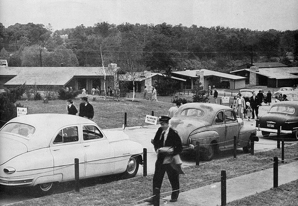
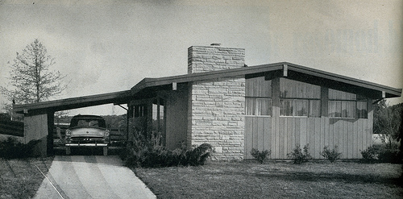
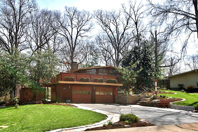
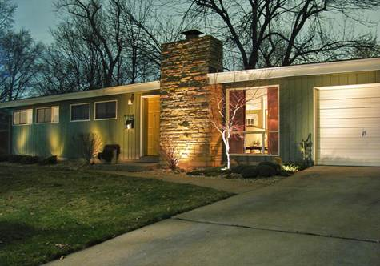

What is MCM?
Mid Century Modern, or MCM for short, is a particular style embodied in architecture interior, product, and graphic design during the mid- 20th century. More specifically, the early 1930s to mid 1960s. In architecture, some definiing materials of this style are glass, steel, and concrete. Houses were built with lots of windows to allow plenty of light to enter as well as feel more connected to nature. Fortunately, St. Louis has many great examples of MCM architecture.
Where can I find MCM Architecture?
There are several good examples of MCM architecture in St. Louis. Some areas of St. Louis are more pocketed with these houses than others. Crestwood and Kirkwood, MO are two suburbs known for their modern subdivisions. There are a few modern subdivisions in other areas of the city as well, but a good number of homes aren't located in specifically modern subdivisions, and you have to do a lot of driving around to find them. Modern STL, a MCM preservation site has a great driving tour you can follow that takes you through some of the well-known MCM neighborhoods and to some notable homes: MCM Driving Tour
Ridgewood Subdivision
"The Ridgewood subdivision, located in Crestwood, Missouri, is a neighborhood of 258 modern ranch homes built in the early 1950's. To meet the public's growing demand for modern homes, successful St. Louis Developer Burton Duenke, in collaboration with architect Ralph Fournier, conceived Rigewood as a modern alternative to the traditional style homes Duenke had been building since 1946." -Modern Ridgewood Website
Many of the houses are still intact but there is a wide variety in the states of the homes. Some houses have been kept up and are in wonderful condition while others need some TLC. To learn more about Ridgewood, you can visit Modern Ridgewood.
Craigwoods Subdivision
Craigwoods subdivision is located in Kirkwood, Missouri. According to BELT St. Louis,
" This small but rambling subdivision was built from 1953 to 1955. Houses range from 1,300 – 3,000 s.f. Many of the homes still have the original owners living there, and when listings for them do appear, they sell quickly."
-BELT STL Website
Luckily, only two homes have been demolished in the neighborhood. Much of the original architecture remains! To read more about Craigwoods, visit BELT STL.
Sugar Creek Ranch
The Sugar Creek Ranch subdivision, located in Kirkwood, MO, was designed by renowned St. Louis architect, Ralph Fournier. There are approximately 60 homes nestled into a hilly landscape and many are still owned by the orginial owners. Most are in excellent shape.